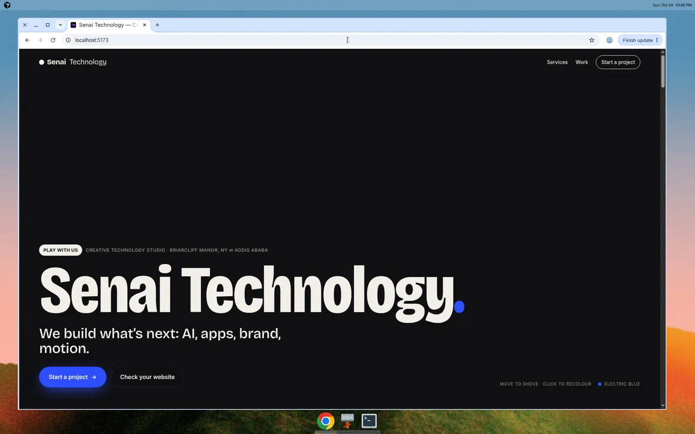
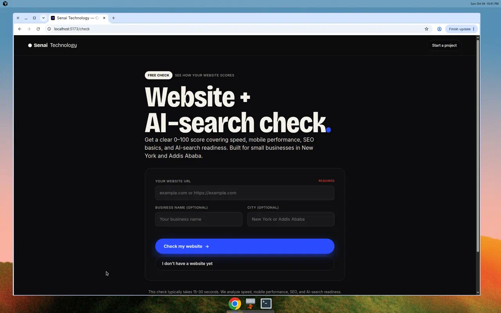
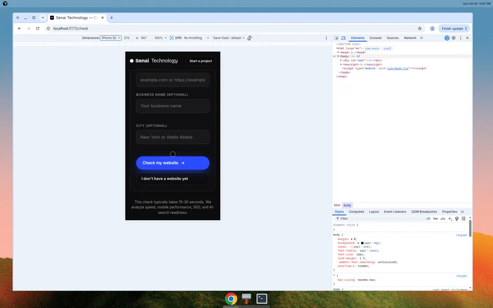
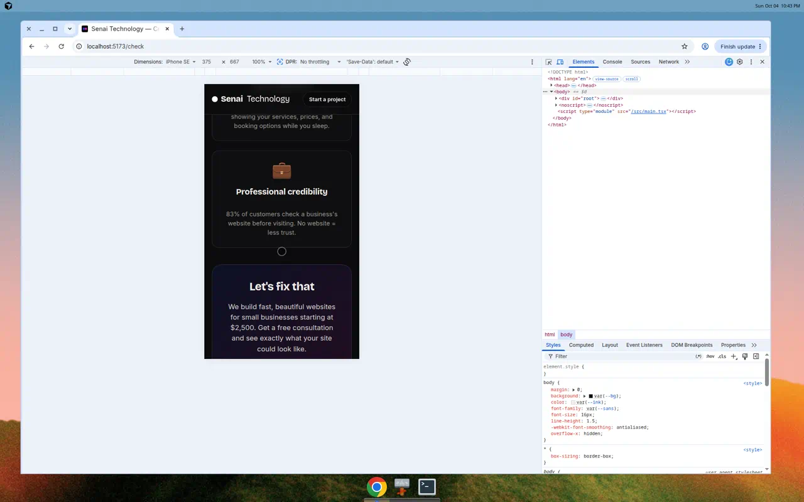
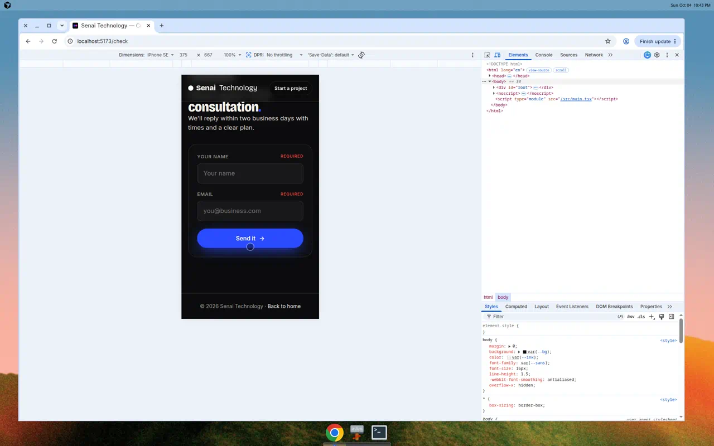

Screenshot Testing Results - October 4, 2026
Progress: 5/8 screenshots captured (62.5%)
Tested at http://localhost:5173 using Chrome with mobile emulation
The new "Check your website" button integrated into the homepage, positioned below the main CTA.

The /check page showing the website checker form with URL input, optional business name and city fields.

Mobile-responsive layout (iPhone SE 375px) showing the form optimized for touch input.

Educational page explaining benefits of having a website with compelling copy and clear CTA.

Simple consultation request form collecting name and email with promise of 2-day response.

Reason: API endpoint /api/check-website only works on Vercel.
Expected content: Loading spinner, "Checking your website..." text, 15-30 second estimate.
Action needed: Deploy to Vercel and test with real website URL.
Reason: Requires successful API response with website analysis data.
Expected content: Score badge, Performance section, SEO checklist (9 items), AI-readiness checklist (3 items).
Action needed: Deploy to Vercel and test with stripe.com or example.com.
Reason: Requires successful API response.
Expected content: Same as desktop results but in mobile-responsive layout.
Action needed: Deploy to Vercel and capture with mobile emulation.